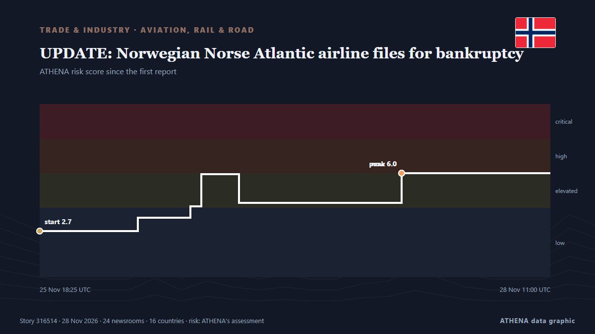

Norwegian Norse Atlantic airline files for bankruptcy

Norwegian low-cost carrier Norse Atlantic, hit by surging jet fuel prices, said Friday that it was filing for bankruptcy, just hours after it saw its aircraft leasing contracts terminated. από The Local Norway
Τι άλλαξε 18 νέες αναφορές από 16 μέσα τις τελευταίες 24 ώρες.
Δείτε τις πηγές ›Τεκμήριωση: Επαρκής
Αναφέρθηκε ανεξάρτητα από 24 μέσα σε 16 χώρες από τις 25 Νοε, πρώτο το Skift· η κάλυψη εξασθενεί. Το ATHENA εκτιμά τον κίνδυνο αυξημένο (5.9/10), κυρίως λόγω της σοβαρότητάς του και της εμβέλειάς του. Βεβαιότητα 89% (υψηλή): το επιβεβαιώνουν 24 ανεξάρτητα μέσα, μέση αξιοπιστία 73%. Μέσα ανά χώρα: Ηνωμένες Πολιτείες (7), Ηνωμένο Βασίλειο (5), Πακιστάν (4). Κάλυψη: 25 Νοε έως 28 Νοε, 71 ώρες.
Γιατί έχει σημασία: Οι διαταραχές στο εμπόριο, τη βιομηχανία ή τις υποδομές διαδίδονται στις αλυσίδες εφοδιασμού και αλλάζουν κόστη και χρόνους παράδοσης μακριά.
Τι άλλαξε: 18 νέες αναφορές από 16 μέσα στο 24ωρο έως 28 Νοε.
Πρώτη διατύπωση: Norse Atlantic Faces Fight for Survival as Cash Crisis Deepens
ΑυτοματοποιημένοΕπιλέχθηκε, ομαδοποιήθηκε και βαθμολογήθηκε με τη δημοσιευμένη μέθοδο της ATHENA από 24 ανεξάρτητα μέσα. Ο τίτλος είναι του μέσου· οι προτάσεις της ATHENA ακολουθούν σταθερά πρότυπα - δεν τις γράφει παραγωγική ΤΝ. Πώς λειτουργεί →
Πώς να διαβάσετε αυτή τη σελίδα
- Τι διαβάζετε
- 24 μέσα σε 16 χώρες ανέφεραν αυτό το γεγονός. Οι αναφορές παρακάτω εμφανίζονται με τη σειρά που δημοσιεύτηκαν· κάθε τίτλος ανοίγει το αρχικό άρθρο. Το ATHENA δεν γράφει δικά του ρεπορτάζ.
- Η εκτίμησή μας
- Για την καταγραφή — Οι αναφορές περιγράφουν ένα ολοκληρωμένο, εσωτερικό, εμπορικό ή προσωπικό ζήτημα. Το καταγράφουμε ώστε να βλέπετε ποιος το ανέφερε και πότε. Δεν παρακολουθούμε εδώ κίνδυνο ευρύτερης σύγκρουσης.
- Πόσα στοιχεία υπάρχουν
- Επαρκής Αρκετά ανεξάρτητα μέσα συμφωνούν, αλλά η εικόνα μπορεί ακόμη να αλλάξει.
Αφού αφαιρεθούν οι επαναλήψεις, τα άσχετα και τα παλιά στοιχεία, υπολογίζονται 23 από τις 33 αναφορές που παρατίθενται· το 100% των τίτλων αντιστοιχεί στο γεγονός.
- Τι δεν σημαίνει
- Το ATHENA μετρά πώς καλύπτεται ένα γεγονός, όχι αν είναι αληθές. Δεν είναι πρόβλεψη, κρίση για το ποιος έχει δίκιο ή συμβουλή.
- Τι θα την άλλαζε
- Αναφορές από άλλα ανεξάρτητα μέσα που δείχνουν διαφορετική εξέλιξη, ή σαφής επιβεβαίωση ή διάψευση από επίσημη πηγή.
Εκτίμηση R2 · ανανεώνεται με κάθε ενημέρωση της σελίδας. Το ATHENA δεν έχει δημοσιεύσει ακόμη ιστορικό επιδόσεων για αυτές τις εκτιμήσεις· όταν το κάνει, θα συνδέεται εδώ.
Με μια ματιά
Επιλέγεται, βαθμολογείται και γράφεται από τη δημοσιευμένη μεθοδολογία του ATHENA. Κανένας συντάκτης δεν παρεμβαίνει σε μεμονωμένα γεγονότα. Πώς παράγεται ›
| 25 Nov 13:27 UTC | 2 |
|---|---|
| 25 Nov 16:27 UTC | 1 |
| 25 Nov 19:27 UTC | 0 |
| 25 Nov 22:27 UTC | 0 |
| 26 Nov 01:27 UTC | 0 |
| 26 Nov 04:27 UTC | 0 |
| 26 Nov 07:27 UTC | 4 |
| 26 Nov 10:27 UTC | 0 |
| 26 Nov 13:27 UTC | 3 |
| 26 Nov 16:27 UTC | 1 |
| 26 Nov 19:27 UTC | 0 |
| 26 Nov 22:27 UTC | 1 |
| 27 Nov 01:27 UTC | 0 |
| 27 Nov 04:27 UTC | 0 |
| 27 Nov 07:27 UTC | 2 |
| 27 Nov 10:27 UTC | 3 |
| 27 Nov 13:27 UTC | 7 |
| 27 Nov 16:27 UTC | 4 |
| 27 Nov 19:27 UTC | 1 |
| 27 Nov 22:27 UTC | 0 |
| 28 Nov 01:27 UTC | 0 |
| 28 Nov 04:27 UTC | 0 |
| 28 Nov 07:27 UTC | 2 |
| 28 Nov 10:27 UTC | 2 |
| 25 Nov 18:25 UTC | 2.7 |
|---|---|
| 26 Nov 06:49 UTC | 3.4 |
| 26 Nov 13:28 UTC | 4.1 |
| 26 Nov 14:52 UTC | 6.0 |
| 26 Nov 19:36 UTC | 4.3 |
| 27 Nov 16:12 UTC | 6.0 |
| 28 Nov 12:56 UTC | 5.9 |
Γιατί αυτοί οι αριθμοί
Σημασία
Πόσο πολύ και πόσο εμφανώς αναφέρεται η είδηση.
Κίνδυνος
Τι περιγράφουν οι αναφορές, βαθμολογημένο για πιθανή ζημιά. Δεν είναι πρόβλεψη.
Βεβαιότητα
Πόσο καλά την στηρίζουν οι ανεξάρτητες πηγές.
Η κάλυψη — ποιος το ανέφερε και πότε
ο τίτλος όπως δημοσιεύτηκε · ανοίγει το πρωτότυπο- Skift · Ηνωμένες ΠολιτείεςNorse Atlantic Faces Fight for Survival as Cash Crisis Deepens
- CNBC World · Ηνωμένες ΠολιτείεςBudget carrier Norse Atlantic falls 78% after warning its finances are ‘critical’ amid soaring fuel costs
- AzerNews · ΑζερμπαϊτζάνNorwegian budget carrier tumbles 80% on 'critical' finances
- The Local Norway · ΝορβηγίαNorwegian airline Norse Atlantic suspends flights, says bankruptcy imminent
- CNBC World · Ηνωμένες ΠολιτείεςNorse Atlantic suspends all flights, warns it may file for bankruptcy after share price collapse
- MyLondon · Ηνωμένο ΒασίλειοNorse Atlantic suspends all flights today after 'critical' warning
- Business Recorder · ΠακιστάνPakistan's PIA deal in limbo as Norse Atlantic faces bankruptcy
- Fox News (World) · Ηνωμένες ΠολιτείεςNorse Atlantic airline suspends all flights, on brink of bankruptcy amid rising fuel costs
- BBC Business · Ηνωμένο ΒασίλειοNorse Atlantic suspends all flights as it faces potential collapse
- Skift · Ηνωμένες ΠολιτείεςNorse Atlantic Suspends Flights as Bankruptcy Looms
- Sky News (World) · Ηνωμένο ΒασίλειοAirline suspends all flights - as carrier faces bankruptcy
- Business Recorder · ΠακιστάνPIA cancels 2 UK flights as Norse suspends operations
- Dawn · ΠακιστάνNorse Atlantic lessors demand jets back as airline seeks urgent funding
- The Thaiger · ΤαϊλάνδηNorse Atlantic halts all flights, may file for bankruptcy
- The Local Norway · ΝορβηγίαUPDATE: Norwegian Norse Atlantic airline files for bankruptcy
- Oman Observer · ΟμάνNorse Atlantic files for bankruptcy as Iran war jolts airlines
- Dawn · ΠακιστάνAirline Norse Atlantic's Norwegian operating unit declares bankruptcy
- Luxembourg Times · ΛουξεμβούργοEuropean airlines brace for more bankruptcies after Norse suspends flights
- Business Traveller · Ηνωμένο ΒασίλειοNorse Atlantic Files for Bankruptcy, Cancels All Flights: What You Need To Know
- CNA (Channel NewsAsia) · ΣιγκαπούρηAirline Norse Atlantic’s Norwegian operating unit declares bankruptcy
- DW English · ΓερμανίαAirline Norse Atlantic files for bankruptcy, succumbing to aviation fuel costs
- The Sun Malaysia · ΜαλαισίαNorse Atlantic collapses after aircraft leases terminated
- The Guardian · Ηνωμένο ΒασίλειοNorse Atlantic Airways files for bankruptcy and cancels all future flights
- Skift · Ηνωμένες ΠολιτείεςNorse Atlantic Collapses as Norwegian Arm Files for Bankruptcy
- Al Jazeera English · ΚατάρNorse Atlantic files for bankruptcy, halts flights and ticket sales
- Arab News · Σαουδική ΑραβίαNorse Atlantic’s Norwegian unit files for bankruptcy as Iran war jolts airlines
- ProtoThema English ·Norwegian low-cost airline Norse Atlantic declares bankruptcy due to soaring fuel prices
- CNBC World · Ηνωμένες ΠολιτείεςBudget airline Norse Atlantic files for bankruptcy in Europe after failing to secure funding
- Tuko · ΚένυαNorse Atlantic Airways: Passengers stranded as airline cancels all flights, files for bankruptcy
- IOL · Νότια ΑφρικήTravellers left stranded following Norse Airlines files for bankruptcy
- MyJoyOnline · ΓκάναNorse Atlantic suspends all flights as it faces potential collapse
- IOL · Νότια ΑφρικήStranded by Norse Atlantic? Here's how to get home and recover your money
- Al Jazeera English · ΚατάρNorse Atlantic ends flights: How Iran war continues to batter aviation